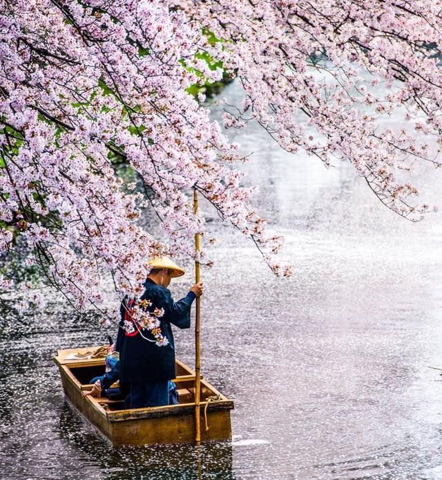

Весна – найкраща пора року
Весна – найкраща пора року, але в той же час і найпроблемніша з точки зору здоров'я.
Згідно з даоською традицією, весна відноситься до елементу Дерево, основний її рух - розширення. Символом цього розширення є знак «молодий ян». Це символ зародження, початку росту.
В цю пору року активуються взагалі всі енергії тіла, всі органи чуття - тому що організм просинається після зими і пробує активніше орієнтуватися в навколишньому світі. В природі починається новий життєвий цикл.
Але з іншої сторони, після зими організм ослаблений. Весна відноситься до перехідного періоду від холоду до тепла. І це час перебудови протікання енергії в тілі. Якщо зимою енергія зберігалась в кістках і внутрішніх органах, то весною вона починає рухатися з середини до поверхні тіла. З внутрішніх органів йде резерв енергії, але і до поверхні тіла енергія ще не прийшла в достатній кількості. Її не достатньо для захисту.
Звідси подвійна небезпека. Перша - якщо мало енергії, то можливе загострення хронічних хворіб. І друга - зовнішня патогенна енергія холоду і вітру може легко проникнути в тіло. Звідси простудні і запальні хвороби, грип. Через це є високий ризик втратити енергію в ранню весну (це період, коли ще не зазеленіли дерева).
Щоб цього уникнути, нам з одного боку потрібно підтримувати внутрішні органи. А з іншого боку - забезпечити зовнішній захист тіла від холоду. І по-третє - більш свідомо підходити до витрачання своїх внутрішніх ресурсів.
Перше: підтримка внутрішніх органів. Основну увагу приділяємо Ниркам, Печінці і Легеням. Нирки - це основне сховище енергії. Якщо воно буде наповнене, то у вас буде достатньо сил і нирки по колу енергії зможуть підживити систему Печінки. Від стану печінки у великій мірі залежить ваше здоров'я, тому що вона - головний орган весною і найсильніший. А система Легень і самі легені - найслабший орган в цей період. А так як є велика небезпека простуд і грипу, про яку я говорила вище, то нам обов'язково потрібно їм допомогти дихальними практиками, масажем, прогріванням полинної сигарою і різноманітними вправами. Тому, доки холодно, доки не зазеленіло листя на деревах - ми робимо вправи для підтримки легень, печінки і нирок.
Зовнішній захист від холоду: не поспішаємо роздягатися. Про небезпеку холоду я говорила в статті «Небезпека і підступність холоду"
І ще один нюанс: весною патогенна енергія холоду атакує ноги. Справа в тому, що весна - це сезон Дерева. А Дерево активується, починаючи з коренів. І крім того, що енергія йде із глибини до поверхні, вона іще рухається знизу вверх, відбувається активація стоп. Ноги ніби відкриваються. Але ще холодно, особливо біля землі. І холод проникає в ноги, особливо у тих, хто занадто рано переходить на весняне взуття, відкриває щиколотки.
Тому ноги, особливо стопи потрібно розтирати, зігрівати, робити масаж ніг.
Режим тренувань і спосіб життя: розумне витрачання внутрішніх ресурсів. Сон: рано лягаємо до сну і рано прокидаємося. Весною нам потрібно менше часу для сну ніж зимою.
Якщо продовжуєте загартовуючі процедури, то після впливу холоду обов'язково зігрійтеся до відчуття надлишку тепла. Але це можна робити тільки тим, у кого достатньо внутрішніх ресурсів і хто не відчуває недостатку енергії весною. Не використовуємо водні процедури для того щоб збадьоритись.
Оскільки весною організм має найнижчий рівень енергії в році, підходимо до тренувань з розумом. Всі практики, що потребують значних затрат енергії, виконуються з великою обережністю. Вправи на витривалість і вибухову силу є небажаними. Це забирає багато енергії.
Весною дуже важливо використовувати різноманітні практики розслаблення. Справа в тому, що весною активується ян і йде енергетичний процес розширення. Тому підвищується тонус м'язів і сухожиль. Через те в тілі зростає напруження, котре потрібно вчасно забирати. Весна - час регенерації і омолодження. Але якщо ви знаходитесь в напруженні - ці процеси гальмуються або зупиняються повністю. Тому практики усвідомленого глибокого розслаблення з прибиранням вогнищ напруження через дихання, медитації, глибокі масажі обов'язково виконуються весною (на фоні загальної активації організму).
Приділяємо також час розтяжці, як одному із способів розслабити м'язи і вивести з них патогенну енергію.
Всім здоров'я!
Джерело: Цигун Shou Tao Київ
Інструктор: Світлана Герасимчук


Записатись на тренування
+38(067)67 55 230